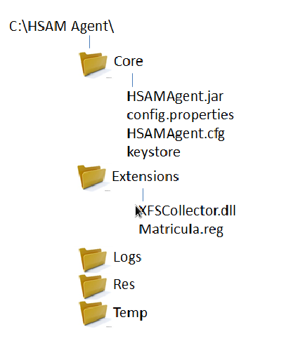

Quick Installation Guide¶
Client Side(ATM)¶
The NCR HSAM Agent is the piece of the NCR HSAM able to catch all the information provided by the ATM in order to be stored in the NCR HSAM Database. Although it is mainly intented to be run in ATMs, it is also able to collect information from any other devices.
- It is divided into two main pieces, HSAMAgent.jar and XFSCollector.dll.
- HSAMAgent.jar: The Java based core of the HSAM Agent. It manages all the processes to collect the required information from the Operating System,Hardware, Software and any other specific information from ATMs(XFS, J/XFS, Financial Devices, etc).
- XFSCollector.dll: A C++ based collector of the information coming from the SW based onthe standard XFS. It is directly managed by the core agent. It automatically detects the highest XFS version supported for each XFS Service Provider starting from XFS 3.10 to XFS 2.00 and extracts the Capabilities information.
- The NCR HSAM Agent performs the following actions:
- ATM Information Collector that gathers all the ATM information and stores it in a JSON formatted file (www.json.org).
- Server Requests Receptor for getting on-demand information. When an update order is received the ATM information is refreshed and restored into the JSON results file. Once finished, the server is notified.
- Request Sender for notifying the server that an update has been completed and a data update can be requested after a manual or scheduled demand for updating, or after refreshing the ATM information the first time the agent starts up.
NCR HSAM Agent Requirements¶
The minimum requirements for running the NCR HSAM Agent are:
Windows NT (*)/XP/7
Java 1.5
Service Providers XFS 2.00 – J/XFS Device Services CWA 2001 -
Optional for collecting ATM standard information.
Windows Management Instrumentation Service Started.
For NCR ATMs with Windows XP/7 – WMIDProv package
- (*) Extra requirements only for Windows NT
Windows Management Instrumentation (WMI) Core 1.5 (wmint4.exe)
- For NCR ATMs – Apply the following XFS Manager Error
- Workaround:
- HKEY_CLASSES_ROOTWOSA/XFS_ROOTXFS_MANAGER ShareMapAddr(REG_SZ)=”67000000
- 256 MB RAM
NCR HSAM Agent Installation¶
Unzip the package HSAMAgent.zip in C:. The following folder structure should be created:
Copy the “XFSCollector.dll” file in a folder contained in the System Path – It is strongly recommended to use the path C:WindowsSystem32.
Execute the Matricula.reg file to create the registry key to be used for handling the ATM Id.
NCR HSAM Agent Configuration¶
- J/XFS Configuration
- The read.repository file should include the desired J/XFS configuration for the application INVENTORYAGENT.
- The System Classpath should include the J/XFS kernel.
- HSAMAgent.cfg (only for J/XFS ATMs)
- workstation_name key Computer name.
- config_key key – Application name according to the read.repository application name (INVENTORYAGENT).
- sdm_addparm_1 key – Path where J/XFS is installed.
- Config.properties ((*) Mandatory)
- SERVER_IP (*) – HSAM Server IP.
- CONFIG_FILE_PATH (*) – HSAMAgent.cfg path.
- AGENT_PORT (*) – HSAM Agent port.
- SERVER_PORT (*) – HSAM Server port.
- DEVICE_TYPE (*) – Device where the agent is running (currently only ATM supported).
- SERVER_TIMEOUT – Waiting timer for a server response.ar y reemplazar
- OK_MESSAGE – Success response message to the server.
- SCHEDULE_SLEEP_TIME – Timer for checking configuration changes.
- THREAD_CONTROL_SLEEP_TIME – Timer for checking the execution thread.
- SCHEDULED_CHECK_NOTIFY_SERVER – Indicates if any change in the system configuration should be notified to the server.
- SCHEDULED_CHECK_WRITE_FILE – Indicates if a new JSON file have to be created if a change in the system configuration is detected.
- SCHEDULED_CHECK_WRITE_FILE_PATH – Data file path.
- NOTIFY_SERVER_FIRST_TIME – Indicates if the Agent has to notify the Server the first time it starts up.
- LOG_LEVEL – From lowest to highest level OFF, SEVERE, WARNING, INFO, CONFIG, FINE, FINER, FINEST, ALL.
- LOG_FILE – Log file path.
- LOG_FILE_MAX_SIZE – Max size of log file in bytes.
- LOG_FILE_MAX_NUMBER – Max number of log files.
- STARTUP_SUPPORT (Reserved)
- VENDOR_DEPENDENCIES_SUPPORT (Reserved)
NCR HSAM Agent Execution¶
The NCR HSAM Agent can be executed from a cmd or a bat file from the path where the agent is located (C:HSAM AgentCore), by sending the following sentence:
java –classpath “%CLASSPATH%;C:\HSAM Agent\Core\HSAMAgent.jar” com.ncr.agent.AgentStartup
The NCR HSAM Agent can be executed at any time since it waits for the Aptra Platform to be completely started up.
Server Side¶
Apache Tomcat¶
Install the product (please verify the Host Manager is also selected during the process). http://tomcat.apache.org/download70.cgi. The Tomcat service can be automatically started by changing the “Startup type” property to Automatic.
PostgreSQL¶
Install the product. Please use the following data during PostgreSQL installation:
- User: postgres (default)
- Password: qwerty
Download postgres from http://www.postgresql.org/download/.
From pgAdmin, create a new database called “inventory” and run the script HSAMSchemaDataPostgreSQL.sql to create the database. To run sql scripts in PostgreSQL, execute the following sentence from the bin folder in the PostgreSQL installation path:
psql –U username –d inventory > HSAMSchemaDataPostgreSQL.sql path
(where username is the PostgreSQL user, usually postgres)
Configuration Files¶
- jdbc.properties (Tomcat Installation PathwebappsatmWEBINFclasses) This file contains the parameters to allow the connection with the database such as user, password, etc. Confirm both the jdbc.username and jdbc.userpassword are properly configured based on the PostgreSQL installation settings (this file is available to be edited once the NCR HSAM Server has been deployed).
- Config.properties (Tomcat Installation PathwebappsatmWEBINFclasses) This file contains the NCR HSAM Server settings. Be aware that some of the settings must be exactly the same configured in the HSAM Agent side such as config.serverSocketPort, config.agentSocketPort and config.agentOkMessage.
NCR Inventory Deployment¶
In order to proceed with the deployment the “atm.war” file must be copied inside the “webapps” folder in the Tomcat installation path. If the Tomcat service is running, a folder called “atm” should be automatically created. If the Tomcat service is not running the “atm” folder will be created once the service is started up and everything has been properly configured.
Once the solution has been successfully deployed, it can be tested by using any of the most common browsers Chrome, Firefox, Opera, Internet Explorer (7 and above), Safari by clicking:
- http://localhost:8080/atm/login (if the port has been changed during Tomcat installation, please use the correct one) – Local Access
- http://IPServer:8080/atm/login (if the port has been changed during Tomcat installation, please use the correct one) External Access
The default user and password (SUPERADMIN rol) for accessing the application are ‘admin’ for both fields. All ATMs will enroll automatically in the NCR HSAM the first time the HSAM Agent starts up. After a while, the ATM should be listed in the Terminal List.

Table Of Contents
Previous topic
Install And Deploy ATM Monitoring